京张一毫米 / JING-ZHANG ONE MILLIMETER
以铁路刻度、开放实验和人工复核为共同方法，把9公里京张铁路遗址公园组织成连接基础研究、场景验证、产业孵化、公共生活与全球开源协作的城市创新基础设施。
京张一毫米 / JING-ZHANG ONE MILLIMETER
一条用公共证据校准AI创新的9公里铁路遗产带。
铁路用刻度把远方连接起来，中关村用实验把未知变成可复现的知识，AI则必须用版本、证据和人工责任获得公共信任。“一毫米”把这三种文化压缩成同一个设计动作：不追求一次性建成宏大的“智慧城市”，而是把每一次空间改造、每一个AI场景和每一笔运营投入拆成可观察、可试验、可复盘、可退出的最小改进单元。
因此，本方案不是把AI装置摆进公园，而是把京张铁路遗址公园转化为一条城市创新基础设施：北段生产证据，中段转译成果，南段让技术接受公众检验；一条连续的遗产主轴把研究机构、企业、社区、公共服务和国际协作连接成闭环。任何技术如果不能说明服务谁、占用什么空间、由谁负责、怎样验证、何时停止，就不能进入开放街区。
本方案包含三条定位、五项功能和一个空间总纲：
- 文化定位：京张铁路不是背景图案，而是“测量、连接、协作、维护”的方法来源。
- 创新定位：AI创新带不是办公楼集合，而是从基础研究到首个使用者、再到资本就绪服务的开放验证链。
- 生活定位：未来生活不是无人化展示，而是让医疗、教育、商业与公共服务更容易进入，并始终保留人工服务。
- 五项功能：知识生产、场景验证、成果孵化、公共文化、全球协作。
- 空间总纲：一条9公里证据主轴，三个差异化枢纽，四条连续系统，八类可逆组件，十五个AI+场景。
“一毫米”的四重含义：刻度、界面、周期与承诺
“一毫米”首先是一把共同刻度。京张铁路依靠统一轨距、里程和时刻把不同地点与专业连接成系统；本方案借用这种工程文化，不是追求表面的铁路符号，而是要求研究者、企业、运营者和公众使用同一套项目编号、版本记录、空间边界和评价口径。一个成果从实验室移动到街区时，方法、限制、维护成本和失败记录必须一同移动，避免“换了场地就重新讲故事”。
“一毫米”也是一道公共界面。技术可以提高效率，但不能越过人的基本权利和空间底线。连续无障碍通行、非数字服务、知情与退出、专业人员最终决定权、遗产安全和场地恢复，被放在自动化之前。因此，AI设施不是空间主角，而是附着在路径、等候、学习、服务和维护界面上的可关闭服务层；场地越狭窄，越要先保证公共通行和人工服务。
“一毫米”还是一个迭代周期。城市更新不等待一次性总体建成，而以30天完成责任与资料、90天验证使用与维护、365天公开复盘为基本节奏。每轮只改变足以验证一个关键判断的内容：例如先比较三组可替换铺装和遮阴构件，而不是直接改造整段廊道；先运行一处有人值守的医疗导引台，而不是部署全线自动服务。小步并不意味着低目标，而是让每一步都能为下一步提供证据。
最后，“一毫米”是一项公共承诺。每个项目都必须具名说明服务对象、空间占用、数据范围、人工负责人、维护资源、验证指标和停止条件；继续、修改与退出都是正式成果。设计的完成标准不再是“装置是否亮相”，而是“公共问题是否改善、日常空间是否更好使用、责任是否有人承担、无效项目是否能够恢复场地”。
四重含义共同完成空间转译：9公里遗产廊道是一条连续的证据主轴，北段在可控环境中生产证据，中段把原型转译为社区可以首用和维护的服务，南段让成熟项目接受高强度的公众、专业与市场检验；三个枢纽是验证、转译、放大的工作台，四条连续系统保障公共底线，八类可逆组件提供低成本试错接口，十五个AI+场景则把规则落实到具体人群和街区动作。“京张一毫米”不是把城市理想做小，而是把宏大目标拆成能够被共同完成、持续累积并公开负责的城市行动。
边界说明：公告中的43.6平方公里统筹研究范围、11.4平方公里总体设计范围和三处重点区域约368.4公顷是公开文字条件；仓库中的GeoJSON是临时粗略定位，不是官方红线。根据本轮场地事实校正，重点设计地块内不存在可作为设计骨架的现状河道、湖面、明渠或连续地表水系，因此方案不再设置“水院”“水算法庭”或景观水面。“一毫米”是设计与治理尺度，不是雨洪容量或工程精度承诺。精确线位、面积、容量和造价仍须在正式测绘、权属、文保、交通和市政资料到位后复核。来源 来源
命名体系与视觉规范：名称先说明责任，颜色先说明状态
“京张一毫米”是总品牌，也是项目进入公共空间时使用的共同尺度。下位名称采用“场地＋运营责任＋空间类型”的语法：清河材料验证庭负责形成可比较证据，AI原点开源共享院负责首用、维护和人工服务，大钟寺一毫米舞台负责公开复核与国际传播；“开发者散步道、开源成果廊、贡献荣誉墙”则分别对应理解过程、展示可复用成果和承认长期责任。名称不使用“已建成、已获批、示范工程”等状态性词语，避免概念建议被误解为建设承诺。
| 视觉要素 | 统一含义 | 使用规则 |
|---|---|---|
| 深墨色与钢轨平行线 | 百年铁路的结构、刻度和连续性 | 用于总标题、主轴、边界和不可被活动占用的公共底线 |
| 开源青 | 开放共享、公共接口和可被复用的知识 | 用于步行与无障碍、开源资料、人工服务入口；不表示技术已自动获准 |
| 公共绿 | 已有人维护的日常通行、树荫与恢复能力 | 只有具名维护者和可持续工单的空间才使用；不以“蓝绿”暗示不存在的水系 |
| 复核金 | 尚需专业人员签字、阶段验收或公众审议 | 用于医疗、教育、文保、安全、商业承诺等不能由AI独立决定的事项 |
| 暂定洋红 | 临时几何、假设、待补数据和可撤回试验 | 必须同时附“概念/暂定/待复核”文字，颜色本身不承担唯一判断 |
标志不再另造一个与铁路无关的图形，而把“1 mm”刻度、双轨平行线和一个可移动的校准点组合成最小识别单元。它可以出现在项目凭证、构件铭牌、导视和数字页面上，但每次使用都必须同时显示项目ID、版本、责任人和状态；脱离这些证据字段的Logo只用于传播，不代表项目通过验收。标准
设计依据与资料清单
先区分四类信息，再开始设计
方案把资料分为“可以引用的事实、经过用户校正的场地条件、用于推演的临时条件、必须补齐的专业数据”四层。可以引用的事实包括公开征集公告、面向智能体任务书、范围面积与三处重点区域名称；本轮明确的场地条件是重点地块没有现状地表水系；临时条件包括仓库提供的粗略边界和概念图层，只用于检查空间关系；必须补齐的数据包括正式红线、1:500或1:2000地形、产权、建筑普查、文保控制、道路与轨道出入口、地下管线、树木普查、热环境、照明和运营预算。来源 来源
这种区分直接决定设计深度：我们可以提出“连续无障碍主轴”“三处可逆试验庭”和“开放首层”等空间建议，但不能据此确定拆迁、容积率和工程量。所有关于水面的旧表达均被撤回；普通降雨仍通过既有市政排水、树池和铺装构造处理，但本方案不把排水设施包装成场地水系，也不宣称调蓄绩效。效果图表达未来空间意向，不证明现状条件，也不代表政府采纳或项目获批。
设计依据如何进入成果
正文负责讲清楚判断和策略；图纸负责说明空间组织；GeoJSON负责保存可复算的概念几何；指标、假设、标准和合规矩阵负责说明证据边界。四者必须互相对应：一个数字如果不能追溯到来源或公式，就不进入结论；一个空间动作如果没有责任主体和停止条件，就不进入近期实施包。深度
场地事实修正：无水不是缺点，而是重新确定设计重点
重点地块没有现状水系，意味着设计不能再以河岸、湿地、亲水界面或“蓝绿廊道”作为叙事捷径。真正需要被解决的是铁路遗产空间被道路、围墙和管理边界切割，步行与无障碍连续性不足，沿线首层缺少可停留的公共服务，科研成果缺少真实使用场所，以及活动结束后没有持续维护机制。方案因此把资源集中到六项可核查工作：修补连续通行、保留铁路构件、增加树荫和休息、建立材料与设施试验场、打开公共服务首层、组织全年运营。
这一修正也改变效果图的表达规则。图中不得出现并不存在的河湖、明渠、湿地或景观水面；绿地主要由现状树木保护、补植乔木、耐旱地被、透气铺装和可拆休息构件构成；排水沟、雨水口和树池只作为普通市政与场地构造出现，不承担文化主题。所有新图都必须能够回答“人从哪里进入、怎样行走和停留、谁在这里工作、设备如何维护、活动结束后空间是否仍可使用”。
无水场地仍然需要应对北京夏季热环境、短时降雨、冬季寒风和日常扬尘，但这些问题分别通过遮阴连续率、地表温度、排水通畅、耐久铺装、冬季可达性和维护工时来验证。换句话说，设计对象从抽象的“生态水景”转为具体的公共空间性能，既更符合场地，也更有利于后续实施和审计。
三层范围工作框架
三层范围不是把同一张图放大三次，而是分别回答“为什么形成创新带、创新带怎样组织、首批项目在哪里发生”。
| 工作层级 | 核心问题 | 本方案的回答 | 交付深度 |
|---|---|---|---|
| 43.6平方公里统筹研究范围 | 海淀的研究、产业、资本和城市生活怎样形成完整链路 | 建立从公共问题到基础研究、共享技术、场景验证、孵化、资本就绪和跨城复用的七道门 | 战略机制与协作关系 |
| 11.4平方公里总体设计范围 | 百年铁路遗产怎样成为创新带的空间骨架 | 形成9公里证据主轴，北中南三段分工，并以步行、骑行、遗产和树荫生态四条连续系统缝合两侧街区 | 城市设计结构与概念分区 |
| 三处重点区域约368.4公顷 | 哪些空间能够在近期形成可验证的样板 | 清河材料验证庭、AI原点开源共享院、大钟寺一毫米舞台分别承担验证、转译和公共放大 | 可逆原型、界面与运营包 |
三层通过同一项目ID连接：公共问题在街区提出，研究团队形成方法，技术在限定场地测试，运营者记录结果，孵化与专业服务机构组织后续，最终由公众体验和年度审计决定继续、修改或停止。这样，战略不是空泛愿景，节点也不是孤立造景。空间数据 指标
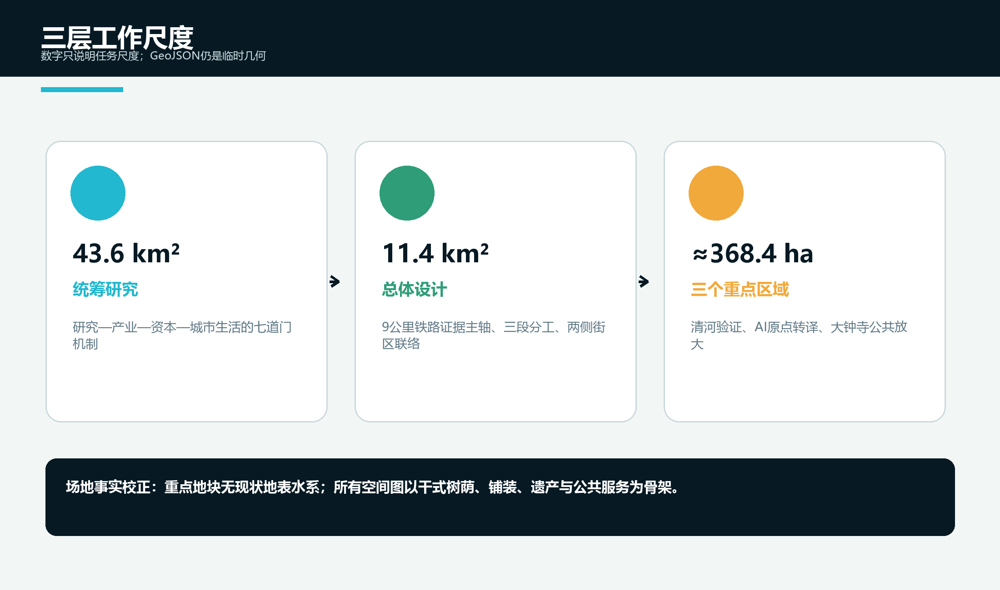
六项任务是一条因果链
总体概念提供共同语言；创新生态决定项目如何成长；AI+场景说明技术怎样进入真实生活；公共空间提供验证和交流的场所；文化叙事解释为什么必须发生在京张；活动运营让空间、内容和资金持续更新。六项工作不分别做“亮点”，而是共同回答一个项目从哪里来、在哪里试、谁来负责、留下什么证据。

统筹研究范围产业与未来城市研究
产业策略：从“企业集聚”转向“证据集聚”
创新带的稀缺资源不是办公面积，而是能够让基础研究接触真实问题、让企业获得合规试验场、让公众看懂技术影响的城市接口。方案把产业组织定义为一条“七道门”创新链：G0公共问题定义、G1基础研究、G2共享技术、G3场景验证、G4孵化与首个使用者、G5资本就绪服务、G6规模化与国际协作。项目可以前进、回退或停止；每通过一道门，都必须增加一份可审查的证据，而不是增加一条宣传口号。标准
六个全球案例支持的是机制选择，而不是本地指标。Punggol Digital District说明校园、企业和地区运营可以共享协作环境；Kalasatama说明短周期街区试验能降低参与门槛；MIT Senseable City Lab说明研究成果需要可被城市和公众理解；Paris-Saclay说明科研、产业、交通和生活品质必须并置；Barcelona 22@提醒创新城区不能退化为单一办公园区；Waterfront Toronto强调数字项目的独立审查和公众问责。京张只迁移“开放、混合、审查、迭代”的方法，不复制境外规模、投资和绩效数字，更不把其他城市的滨水经验移植到无水场地。来源 来源
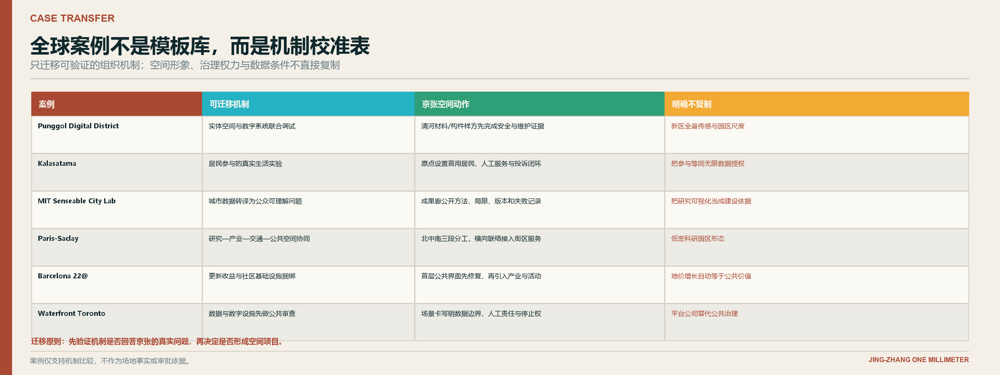
七道门：把研究、孵化与资本服务接成一条链
| 门 | 主要空间 | 必须形成的证据 | 通过后发生什么 |
|---|---|---|---|
| G0 公共问题 | 沿线社区服务点、遗址公园与公共首层 | 问题业主、受影响人群、非AI替代方案 | 形成可研究的问题卡 |
| G1 基础研究 | 众智园研究工坊 | 方法、数据权利、局限与伦理预检 | 进入共享技术开发 |
| G2 共享技术 | 众智园工具与算力服务台 | 模型卡、数据卡、资源账单、最小原型 | 获得限定测试资格 |
| G3 场景验证 | 三个枢纽和限定路径 | 30/90天记录、事故与投诉台账、人工接管记录 | 获得首个使用者判断 |
| G4 孵化与首用 | AI原点开源共享院 | 服务手册、维护成本、许可和用户验收 | 形成团队与可复用组件 |
| G5 资本就绪 | 中关村科技服务翼 | 知识产权、合规、市场和财务材料 | 进入专业服务与投资人沟通 |
| G6 规模与国际协作 | 大钟寺与年度开源周 | 双语证据包、复用条件、年度影响报告 | 决定跨区复用或终止 |
G5不承诺投资，而是让项目“可被尽调”：把权属、合规、用户价值、成本、风险和维护条件整理成同一资料室。资本只有在真实场景证据之后进入，避免用融资热度替代公共价值。指标
三区两翼：不是五个园区，而是五种责任
众智园负责研究与安全验证；北京AI原点社区负责成果转译、开源维护和人才服务；大钟寺负责产品体验、商务交流和国际展示；中关村科技服务翼提供知识产权、合规和资本就绪服务；任务书所称小月河场景赋能翼持续提供公共问题、社区共评和低风险测试，其中“小月河”作为片区称谓使用，不据此推定重点地块内存在水系。五者共享项目ID、开放测试凭证和证据仓库，避免项目在不同机构间失去责任链。来源

总体设计范围城市更新与控规深度城市设计
总体概念：一条主轴，三段分工，四线连续
9公里主轴不是一条统一铺装的景观带，而是一条连续的公共证据系统。北段“清河至众智园”以研究验证为主，保留较安静、可控制的材料与安全测试空间；中段“AI原点至四道口”以成果转译和社区生活为主，让开源成果、铁路记忆和日常服务共享首层；南段“大钟寺至西直门”以公众体验、商务交流和国际传播为主，把成熟项目放到高可达场景接受检验。
四条系统贯穿三段：一条不被展陈侵占的连续无障碍步行线；一条服务通勤并在冲突点降速的骑行线；一条以保留铁轨、枕木、里程和工业构件组织的遗产叙事线；一条由现状树保护、连续树荫、耐旱种植、休息点和环境观察位构成的树荫生态线。四线可以在宽处并列、窄处叠合，但任何AI设施不得切断基本通行，也不得以虚构水景替代真实的街区修补。
从一条线到两侧街区：空间结构不是只做公园内部
主轴自身解决南北连续，两侧街区连接决定创新带能否真正工作。方案以约400至600米步行服务半径检查横向联系：轨道站点、科研院所、社区中心、医疗服务、学校、商业首层和公共交通站点必须能够通过清晰的过街、坡道、照明和导视到达主轴。横向连接不是在图上画箭头，而是逐处记录围墙、机动车出入口、高差、桥下暗区、共享单车堆积和夜间关闭时间，再决定打开、绕行或预约通行。
北段的空间语气是“安静、可控、可记录”：较少大型活动，更多材料样方、观察座椅和工作人员路径；中段是“混合、可达、有人值守”：首层服务、社区课程和开源维护同时发生；南段是“高频、可转换、可复盘”：工作日保持通行与等候，周末才通过可拆设施转为市集或发布场。三段差异来自使用强度和项目成熟度，而不是用三套互不相干的造型制造主题公园。
每一个空间动作都配套运营动作。新开入口必须说明开放时间和管理单位；增加展架必须说明谁更新、谁清洁、故障时如何关闭；新增树荫和座椅必须纳入园林与保洁工单；允许机器人或智能设施试验必须预留停机区、人工接管点和实体边界。这样，城市设计图上的线、点、面才能变成可执行的任务清单。
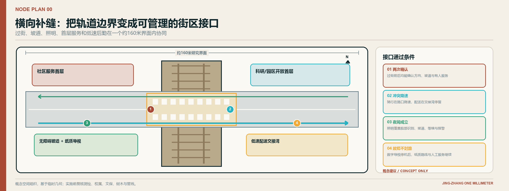
38米典型断面：兼容性检查，而不是统一红线
典型断面把6米公共首层、4米步行、3.5米骑行、5米树荫与休息带、9米遗产轨道或弹性场、4米步行和3.5米绿缘放在同一张图上。它的作用不是宣称全线都有38米宽，而是检验七种需求能否共存，并给窄段提供优先级：先保连续无障碍和遗产安全，再组织骑行、乔木与休息，最后放置活动与数字设施。5米树荫带不是水系或下凹雨园的替代名称，而是以现状树保护、透气根区、耐旱地被和可维护铺装为主的干式公共空间。正式道路红线、桥下净空、消防和管线条件必须由专项复核。空间数据 深度
更新方式：先连通，再激活，最后决定建筑动作
第一步修补断点：过街、坡道、遮阴、夜间照明和非数字导视；第二步打开界面：把封闭首层转成可预约工坊、服务台和社区客厅；第三步植入可逆原型：材料样方、树荫座椅、开源展廊和小型舞台；第四步在建筑普查后决定保留、改造、补建或拆除。这个顺序让公共价值先出现，也让大体量建设可以被前期证据修正。

空间分析图怎么读：先看整个地块，再看节点内部
本轮空间深化增加了“全线用地与三段分工图”。它不是把临时边界涂成一张看似精确的法定总平面，而是把约9公里南北向范围线性展开：五类用地分别承担研发验证、树荫生态、产业与公共首层、人才社区与公共服务、铁路遗产与公共广场职责；清河、AI原点和大钟寺分别落在验证、转译和公开放大的位置。图中的颜色回答“哪一部分负责什么”，红色节点框回答“近期从哪里开始”，青色主轴和金色横线回答“南北连续与东西连接如何同时成立”。
节点概念平面继续把功能拆到可使用的空间单元。每张图都同时标明保留轨道、连续无障碍主线、四个主要功能块、补充服务和停机/维护边界。它们用于解释组织逻辑和相邻关系，不决定建筑轮廓、地块红线或工程尺寸；正式测绘、产权、文保、树木和地下管线资料到位后，必须以同一功能逻辑重绘。
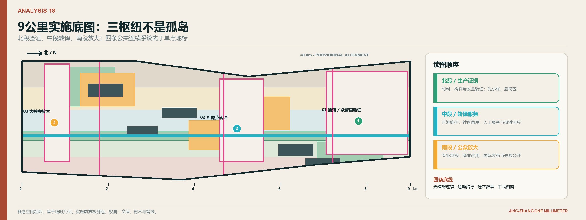
重点区域详细设计
三个重点区域使用同一套“问题进入、限定测试、人工复核、公开结果、可逆退出”规则，但不能做成三个相同的AI广场。它们在创新链上承担不同环节，因此空间、用户和运营节奏也不同。空间数据 深度
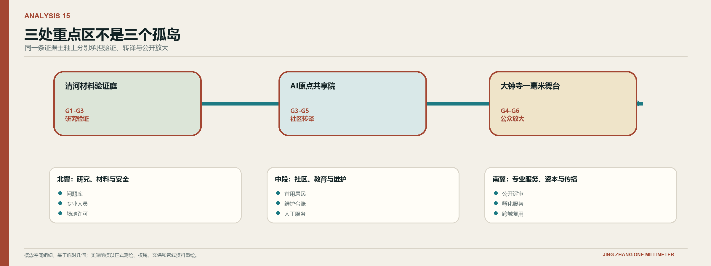
下图保留征集校验所需的三处重点区域范围基底，用来回答“范围在哪里”；上图则进一步回答“三处地块各自承担什么责任、如何形成一条链”。两图必须结合阅读，范围图不代表正式红线，关系图也不替代后续测绘与专项审查。
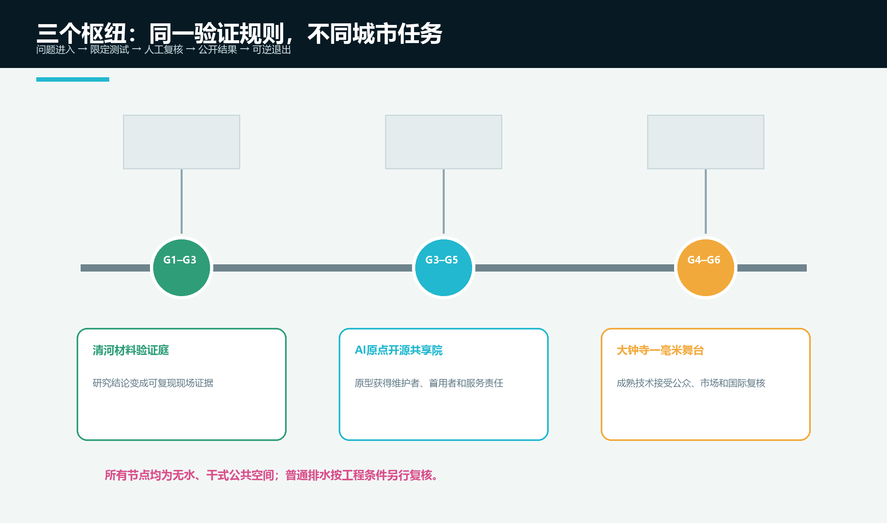
1. 清河材料验证庭：把研究变成可复现的现场证据
清河节点邻近产业研发空间、既有铁路和城市道路，重点地块没有河道或景观水面，适合承担G1至G3的干式现场验证。空间由约180米可控测试带、三组可替换铺装与构件样方、连续观察廊、人工复核台、遮阴工作棚和设备停机位组成。样方不追求造景，而是比较防滑、耐磨、热舒适、轮椅通行、拆装效率和维护工时；每组样方都有同尺寸对照区，避免把材料差异和场地差异混为一谈。
测试流程不是“传感器采数后自动得出结论”，而是先登记天气、使用强度、材料批次和维护条件，再用仪器记录与人工观察互相校核，最后公开输入条件、异常、失败样本和继续或停止决定。研究人员获得真实场景，公众看到结论怎样产生，公园运营者得到可执行的维修工单，而不是黑箱仪表盘。首期只测试不涉及个人数据的铺装耐久、树池养护、遮阴构件和设施状态；不建设水面、湿地或以蓄水为卖点的构筑物。空间数据
日常状态下，中央无障碍路径保持连续，材料样方与工作区之间设置清晰边界；预约测试时，工作人员在入口登记测试目的、时段、风险和恢复方式；测试结束后，样方恢复为普通可通行铺装或拆除。清河节点的成果不是一件永久装置，而是一套别人可以复验的“条件表、数据包、维护工时和失败说明”。
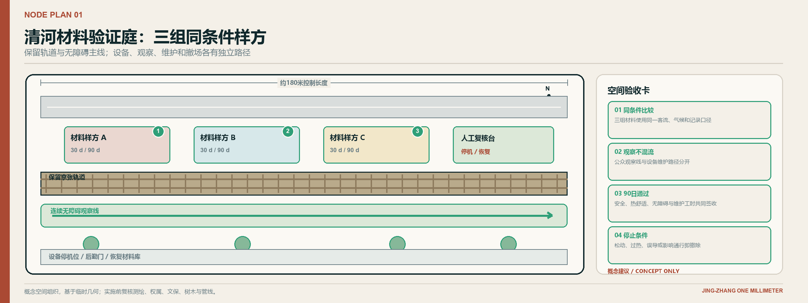
2. AI原点开源共享院：把原型变成有人维护的公共产品
原点社区承担G3至G5，是研究成果进入社区和孵化服务的“翻译器”。核心是一段约120米的铁路遗产共享界面：连续4.5米无障碍慢行带连接开源成果廊、维护者桌、人才服务台、可预约教室和可拆共享庭。共享庭是干式铺装与树荫空间，不设置水面；平时是通行、等候和社区休息区，活动时才通过可移动桌椅和展架改变使用。一个项目必须同时展示“解决什么问题、用了什么数据、谁能维护、失败时怎样退回人工服务”，才能获得展位。
白天，这里是人才和企业服务入口；傍晚成为社区课程与维护者门诊；发布活动时则使用轨道边的可逆展架，不封闭基本通行。空间价值不以展品数量衡量，而以有多少原型被社区首用、维护满90天并留下清晰说明书衡量。空间数据
原点节点至少安排四个有人值守的角色：服务人员帮助居民提出问题并保留纸质渠道；维护者解释版本、故障和停用方式；专业人员对医疗、教育、法律和投资相关内容签字；场所运营者管理预约、消防、噪声和恢复。AI可以整理资料和提供建议，但不能替代这些角色。空间由此成为一套“看得见责任人”的公共服务界面，而不是无人展厅。
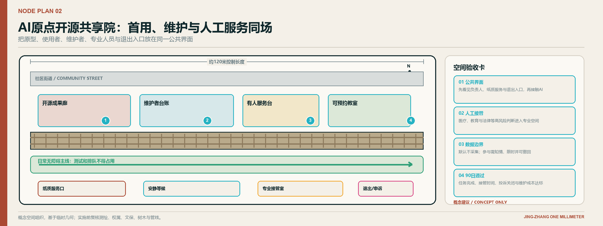
3. 大钟寺一毫米舞台：让成熟技术接受公众和市场双重检验
大钟寺节点靠近轨道站点、商业和高密度生活，承担G4至G6。方案以约90米弹性事件界面、6米开放首层和保留轨道为骨架，组织四种状态：工作日是医疗、教育和商业服务体验街；周末是开发者与社区共同维护的开源市集；普通夜间回到照明清晰、可穿行、可等候的邻里公共空间；年度开源周则成为双语发布和跨城协作场。四种状态共用同一条无障碍主线和同一套消防疏散，不通过搭建大型地标改变基本秩序。
“舞台”不等于大型屏幕。核心设施是可拆遮棚、低位信息带、实体服务台、无障碍等候区和可关闭的临时电源。任何活动必须保留日常通行，明确人数、噪声、消防、摄影和数据许可，赞助者不能替代专业审查者。空间数据
每次活动前，运营者把日常通行、活动区、安静等候和后勤装卸分开；活动中保留人工咨询、退出路线和不被拍摄的区域；活动后24小时内恢复座椅、清洁、照明和通行，并在一周内公布投诉、异常和改进。大钟寺的价值不在于一年一次的发布会，而在于高强度使用之后仍能回到正常街区生活。
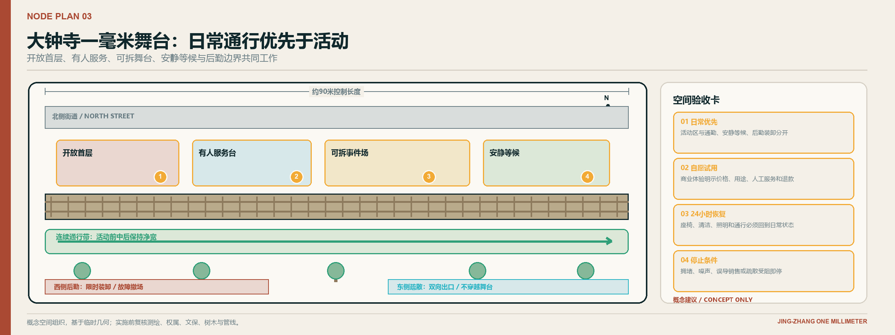

开发者散步道、开源成果廊与贡献荣誉墙
开发者散步道不是一条扫码路线，而是一套在行走中理解项目生命周期的实体界面。沿保留轨道设置四类站点：问题牌说明公共需求，方法牌解释模型与数据边界，测试牌显示当前版本和人工负责人，复盘牌记录继续、修改或停止的决定。所有核心信息都有纸质、触觉或人工替代，不要求下载应用。
开源成果廊只展示能够复用的内容：代码或构件的许可、适用条件、维护者、已知缺陷和复用记录。贡献荣誉墙不做流量排行榜，只承认四类贡献：提出并澄清真实问题、合并可复用版本、完成独立验证、持续维护或负责任地停止项目。每条贡献可申诉、可更正、可撤回，把“荣誉”从曝光变成责任。指标
AI 创新生态、人才画像与 AI+ 场景
六类用户不是“客群”，而是设计约束
居民需要不被技术排除的日常服务；科研人员需要可复现、可失败的试验条件；创业团队需要首个使用者和合规路径；园区与公园运营者需要可维护、可停机的设施；医疗、教育、法律、会计等专业人员需要最终决定权；国际开发者需要双语资料、清晰许可和可远程参与的任务。所有场景必须同时说明谁受益、谁可能受损、谁负责人工接管。
场景设计采用同一套六步模板。第一步从一个已经存在的公共任务出发，而不是从“哪里可以放AI”出发；第二步画出用户从到达、识别、等待、使用到离开的完整旅程；第三步先配置人工服务、纸质信息和无障碍空间；第四步才确定AI可以减少哪一段信息摩擦；第五步写清数据最小化、专业权限和停机状态；第六步用90天记录判断继续、修改或停止。这样，医疗、教育和商业虽然内容不同，却能使用相同的审查语言。
场景是否落地，最终要看三个空间证据。其一，使用者能否在现场找到入口、负责人和退出方式；其二，运营者能否在断网、设备损坏或人员高峰时维持基本服务；其三，项目撤除后是否仍留下更好的通行、座椅、导视或服务流程。若一个AI场景只能在演示日成立，或必须依赖不存在的水景和全新建筑才能成立，它就不进入首期项目包。
十五个场景：每个场景都落到一个具体界面
| 场景 | 主要落点 | 空间动作 | 人工底线与验证指标 |
|---|---|---|---|
| H01 就医导航 | 原点社区服务台至周边医疗接驳 | 无障碍等候、纸质路径、人工咨询 | 不做诊断；任务完成率和转人工时间 |
| H02 社区健康活动匹配 | 原点社区共享首层 | 小组活动桌、隐私告知、退出入口 | 不读取病历；参与者理解度 |
| H03 高温与空气质量提示 | 三庭与主轴 | 实体状态牌、连续遮阴与饮水点 | 现场人员确认；误报和响应时间 |
| E01 公园学习助手 | 清河材料验证庭 | 材料样方、观察日志、教师控制台 | 教师审核内容；学习任务完成率 |
| E02 开源项目导师 | 原点开源成果廊 | 维护者桌、版本说明和预约位 | 不替代导师评价；问题关闭率 |
| E03 铁路文化分层讲解 | 六站文化路线 | 触觉图、儿童版与专业版文本 | 史料审校；纠错关闭时间 |
| C01 企业服务共驾 | 中关村科技服务翼 | 合规资料室、人工签字位 | 不生成法律或投资结论；补件周期 |
| C02 可信产品体验 | 大钟寺开放首层 | 可退出体验台、数据边界卡 | 自愿参与；退出成功率 |
| C03 街区供需匹配 | 大钟寺活动界面 | 需求墙、预约谈判桌 | 不公开商业秘密；有效匹配数 |
| M01 无障碍断点与施工绕行建议 | 主轴和横向联络 | 实体绕行牌、巡检点 | 现场复核后发布；恢复时间 |
| M02 低速机器人天气停运 | 限定院落 | 停机区、接管位、边界标识 | 不进入开放道路；接管成功率 |
| P01 设施工单分诊 | 三庭和公园设施 | 设施ID、维修人员终端 | 主管派单；有效工单率 |
| P02 活动人流提示 | 大钟寺舞台周边 | 分区计数和备用入口 | 不做人脸识别；拥堵提示提前量 |
| W01 铺装与构件耐久对比 | 清河测试带 | 三组可更换样方和公开日志 | 不夸大性能；数据完整率与维护工时 |
| W02 树荫与树池养护建议 | 三庭绿地 | 传感器与人工检查口 | 园林人员决定；建议采纳和植物状态 |
场景的竞争力不来自“AI含量”，而来自是否同时改善空间和服务。例如AI医疗页的重点不是聊天机器人，而是把无障碍路径、安静等候、隐私告知、人工咨询和转介记录放在同一条用户旅程；AI教育页的重点不是自动授课，而是让铁路构造、铺装材料、树荫变化和设施维护成为可观察课程；AI商业页的重点不是大屏导购，而是让企业、专业服务和首个使用者形成可追责的验证关系。指标
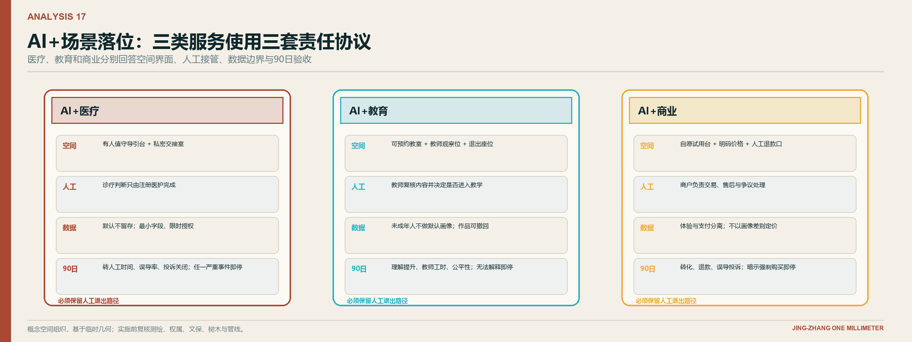
同一张“一毫米场景卡”，三类服务采用不同门槛
每张场景卡填写九项内容：真实问题、主要用户、具体空间界面、最低物理服务、数据边界、人工决定者、失败方式、测量方法和退出条件。九项是共同语法，不表示医疗、教育和商业可以使用同一种终端或同一风险门槛。若空间界面、具名排班、非数字替代或退出路径有一项缺失，场景只能停留在工作坊，不得进入开放街区。
| 四层检查 | AI+医疗 | AI+教育 | AI+商业 |
|---|---|---|---|
| 公共任务与禁止替代 | 处理就医路径、预约材料、无障碍接驳和健康活动匹配；不诊断、不开药、不自动确定分诊等级 | 支持现场学习、铁路文化讲解和开源项目辅导；不自动评分、招生或替代教师判断 | 支持企业办事、需求匹配、试用说明和资料补齐；不自动作出法律、投资、授信或行政审批结论 |
| 空间界面 | 有人值守服务台、遮挡视线的安静等候、通往真实医疗机构的无障碍路径、纸质路线和清晰退出口 | 材料样方、共学桌、教师控制台、可追溯资料牌、团体预约区和不参与座位 | 有人接待、可预约洽谈、保密边界、自愿进入和退出的体验台，以及明示条件与缺陷的证据墙 |
| 数据与AI权限 | 首期不读取病历；只处理导航所需最少信息，会话结束后按规则清除；AI只解释流程 | 不采集人脸、生物特征或建立学生画像；内容标注版本和来源，发布前由教师或策展人审核 | 公开资料与授权商业资料分区；商业秘密不得默认展示或用于训练；输出只是建议与补件提示 |
| 人工责任与验收 | 医疗机构或卫生专业人员最终复核；核查任务完成、转人工时间、错误导引、隐私事件和非数字服务 | 教师、课程负责人或策展人最终复核；核查理解度、来源追溯、纠错关闭和再次使用意愿 | 场所运营者负责流程，法律、知识产权、会计或投资专业人员负责专业结论；核查有效匹配、退款、纠错与成功退出 |
风险决定空间差异：医疗更强调私密等候与快速转人工，教育更强调共同观察与内容可纠错，商业更强调保密洽谈、价格透明和自愿退出。只有四层同时成立，AI才作为可关闭的服务层进入街区；否则先保留人工服务和物理空间，不以数字界面假装责任已经建立。
三类产业验证包
T1铺装、遮阴与可逆构件在清河验证耐久、热舒适、无障碍和维护工时；T2边缘传感与设施智能体在三庭验证校准、掉线、误报和人工工单；T3可信服务智能体在原点和大钟寺验证医疗导引、教育内容与商业咨询的权限、解释和转人工。三类测试都遵循“台架测试、封闭样区、公开小试、独立复核”四步，没有专业复核不得扩大。
T1的成果不是选出一种“最佳材料”，而是建立不同人流、季节和维护条件下的适用范围；T2不追求传感器数量，而是验证异常能否转化为有效工单；T3不以回答数量评价，而以任务完成、转人工速度、纠错关闭和专业人员认可评价。三类验证包共享同一项目编号，使空间性能、数字系统和服务结果能够在同一年度报告中被对照。
用地、建筑规模与拆改留方案
用地方案服务于创新链，而不是重新命名现状地块。科研试验空间靠近众智园和可控测试场；产业与专业服务集中在站城可达和已有服务基础较强的界面；社区服务嵌入原点及人才生活区；遗产公共空间沿主轴连续；树荫绿地、口袋空间和横向联络在清河、小月河片区及断点处形成网络。“小月河”在此是片区名称，不表示重点地块内存在水系。概念分区完整覆盖临时总体边界，用于检查功能是否有空间承载，不替代法定用地分类或审批。空间数据
建筑采用R保留、A改造、I补建、D拆除四类决策框架，但现阶段只做“待普查的可能动作”。优先保留具有结构安全、合法权属、适配性和遗产价值的建筑；改造先做首层开放、无障碍、屋面排水和节能；补建只填补公共试验、服务和维护空间；拆除必须经过鉴定、许可、碳与成本比较和公众沟通。现有六个概念建筑基底只表示功能载体，不是逐栋结论。深度
由于缺少权威建筑底图、层数、结构、产权和控规指标，容积率、高度、建筑密度和工程量保持“待正式数据补齐”。取得资料后，应逐栋建立R/A/I/D台账，并以全生命周期碳排、改造成本、公共价值和搬迁影响共同决定，而不是默认“拆旧建新”。指标
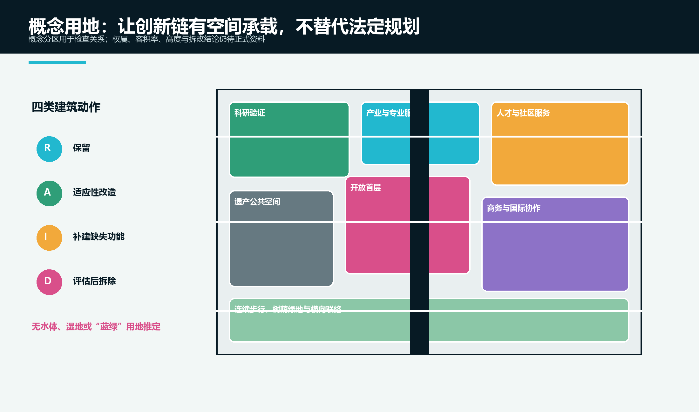
交通、轨道、市政与公共服务设施
交通优先序为步行与无障碍、骑行、轨道接驳、公共交通、服务与应急车辆、一般机动车。主轴负责南北连续，三个枢纽的横向联络负责跨越道路、桥下和封闭界面；任何活动或测试不得占用无障碍净宽。骑行在通勤段保持连续，在展陈和人群密集段通过材质、转角和视线降速。站点周边重点解决“出站后最后500米”的方向识别、遮雨等候、共享单车秩序和夜间安全，但精确线位需结合出入口、红线和交通评价深化。空间数据 深度
市政和新型基础设施采用“感知不等于控制”的原则。十二个环境观察点只采集温湿度、地表温度、照度、噪声和设施状态等最小环境信息，优先本地处理并发布聚合结果；它们可以提示巡检，不能直接控制交通、照明或公共安全系统。普通降雨仍由既有市政排水系统承担，方案不设置水位观测或虚构水体。照明、临时电源、网络和设备舱采用可更换模块，断电或离线时仍保留基本通行和人工服务。指标
公共服务不是附属房间，而是创新链的实体入口：问题门诊、测试登记、合规咨询、人才服务、社区协商、维修响应和非数字帮助必须被安排在首层、可找到、可停留的位置。数字界面旁始终提供电话、纸质或现场人员选项。
蓝绿空间、公共空间与城市风貌
场地没有现状地表水系，绿地策略因此不制造“蓝”的假象，而是建立一条可维护的干式生态与舒适性网络。第一优先是保护健康现状乔木和连续根区，第二优先是在暴晒、等候和过街位置补足树荫，第三优先是使用耐旱、耐寒、低维护植物修补裸地，第四优先才是配置可拆座椅、观察牌和环境传感。树木选择、种植间距和地下条件必须经过树木普查、管线探测和日照分析，不以效果图中的茂密程度替代专业判断。空间数据 空间数据
公共空间按“通行层、停留层、活动层、技术层”逐层组织。通行层永久保持无障碍连续；停留层提供有靠背座椅、遮阴、饮水和夜间照明；活动层通过预约使用可拆桌椅和展架；技术层只放置可关闭、可维护、不会阻断前三级的设备。普通排水口、线性排水篦和树池属于基础构造，不被命名为水景，也不作为项目亮点。这样的层级让空间即使在没有活动、断电或设备撤除时仍然成立。
城市风貌不以统一的“科技蓝光”塑造，而从京张工程文化中提取克制、精确和可维修的构造逻辑。保留钢轨、枕木、里程信息和可确认的工业构件；新增构件使用清晰节点、可更换面板和真实材料；夜间只照亮路径、台阶、服务台和必要信息，不用大面积媒体立面制造景观。新旧之间通过日期、材质和说明明确区分，避免把新造装置误认成历史遗存。
八类组件：用一套构造语言支持不同场景
八类组件包括一毫米刻度门、实体问题牌、材料样方、可拆遮阴座椅、维护者桌、开源展架、人工复核台和可关闭电源舱。每件组件都标明安装前提、日常维护者、故障状态和拆除方式。轨道钢、深墨结构和铆接节点表达京张工程记忆；开源青用于数据与共享接口；复核金标记等待人工判断；公共绿标记已维护且可进入；暂定洋红只用于边界和未知条件。颜色之外还必须有文字和图形，保证色觉差异者能够理解。
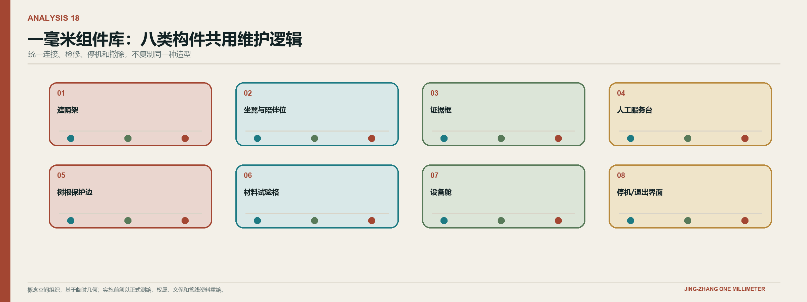
六站文化路线：把三种文化写成六个动作
铁路文化提供测量、连接和维护；中关村文化提供试验、转译和创业协作；AI新文化要求开源、解释和人工负责。六站不是历史主题乐园，而是让游客沿线完成“测量、连接、试验、开源、复核、回到生活”的认知变化。
| 站点 | 讲述内容 | 空间载体 | 必须避免 |
|---|---|---|---|
| 百年刻度门 | 工程刻度如何建立共同标准 | 双轨刻度、触觉线、纸质导览 | 把概念装置误作历史遗存 |
| 京张记忆段 | 铁路如何连接人、知识和城市 | 新旧地图叠读、可逆标牌 | 未核史实和未授权影像 |
| 清河材料验证庭 | 中关村式实验怎样面对真实环境 | 材料样方、实验日志 | 只展示成功结果 |
| 原点开源共享院 | 知识怎样成为可维护的公共产品 | 开源成果廊、维护者名录 | 把开源等同免费或无责任 |
| 贡献荣誉墙 | AI输出怎样接受人工签字和申诉 | 版本树、责任卡、纠错入口 | 排名个人或制造流量竞赛 |
| 大钟寺一毫米舞台 | 技术怎样回到医疗、教育、商业日常 | 双语体验、公众复盘、人工服务台 | 把试验宣传为建成或获批 |
国际传播主句为“Measure small. Learn in public. Improve with people.”，对应“从微小处测量，在公共中学习，与人共同改进。”[assumption:A-CULTURE-008]
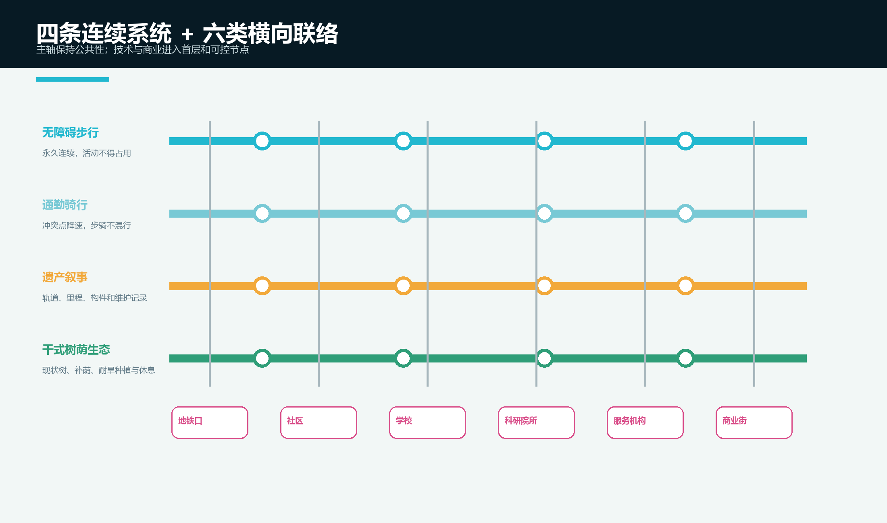
更新项目清单、实施政策与分期计划
近期不是“先建地标”，而是先证明系统能运行
| 阶段 | 时间与范围 | 核心项目包 | 通过条件 | 失败时怎么办 |
|---|---|---|---|---|
| 准备期 | 0至30日 | 确认发起人与场所责任、补资料清单、现场踏勘、开放测试凭证模板 | 一个无个人数据场景获得责任人和场地 | 停止采购，只补资料与责任链 |
| 原型期 | 31至90日 | 一个封闭样区、三次用户测试、无障碍审查、安全演练、公开结果页 | 基本服务不中断，风险可控，维护者愿意接手 | 缩小范围、修正或撤除原型 |
| 样板期 | 4至12个月 | 十二环境观察点分批试装、三处干式可逆组件组合、一处枢纽样板、首届开源周 | 90天维护记录、投诉关闭、成本可解释 | 不扩建其余枢纽 |
| 扩展期 | 第2至3年 | 根据正式规划深化三枢纽、横向联络和建筑更新 | 专项审批、稳定预算、年度审计通过 | 保留已验证的小尺度公共空间 |
投资不在概念阶段填报虚假总额，而采用“成本包+封顶审查”。每个原型分别列调查设计、土建与构件、数字设备、人员值守、维护、保险和恢复费用；永久构筑物、基本公共服务和安全岗位不得依赖一次性赞助。正式估算须在工程量、材料、管线和采购方式明确后由专业团队编制。空间数据 深度
把实施拆成可以发包、验收和停止的工作包
首个90天的公开小试只在一处清河可控样方和一处AI原点有人值守界面发生；一段连续无障碍修补可同步作为公共底线工程。四道口开源展架和大钟寺体验台在这一阶段只完成现状核查、许可路径、构件样机与撤场演练，不接入个人数据，也不形成自动化公共服务。清河与AI原点通过90天运营验收后，才允许把组合样板和高强度活动扩展到大钟寺。这样既保持全线筹备，又不让尚未验证的服务同时占用多个开放场所。
每个工作包在招采前形成七张表：现状与权属表、用户与任务表、空间尺寸表、设备与数据表、人员与排班表、风险与停机表、费用与恢复表。验收也分两次：建成验收只确认安全、尺寸和合同交付；90天运营验收再确认使用、维护、投诉和成本。没有第二次验收，不进入永久化或全线复制。
实施顺序以公共收益和可逆性共同排序。修补坡道、照明、导视和座椅等低风险工作可以先行；涉及建筑结构、轨道安全、消防疏散、地下管线和专业服务权限的内容必须等待正式资料和审批；任何水体、湿地或水景均不属于本方案实施范围。若预算缩减，优先保留连续通行、人工服务和维护岗位，缩减活动规模、数字屏幕和形象装置。
首年责任—证据—验收闭环：同一个负责人贯穿365天
“一毫米”把责任固定在同一张开放测试凭证上。每个项目设置四个具名席位：最终责任人A对公共目标、预算和继续或停止决定负责；交付负责人D提交空间、服务和技术成果；维护责任人M确认值守、备件、工单和恢复能力；独立暂停人S可在安全、权益或证据不足时立即叫停。A不得随设计、施工或软件合同转移；D与M可以随阶段调整，但变更必须公开留痕。涉及医疗、教育、文保、消防或数据权益的项目，还必须由相应专业人员签字。任一席位空缺，项目不得占用公共空间。
| 决策点 | 必须提交的证据 | 验收主体 | 正式决定 | 暂停或退回条件 |
|---|---|---|---|---|
| 0—30日，立项门 | 问题卡、基线、场地许可路径、用户与非数字替代、数据边界、具名排班、费用上限和恢复方案 | 场所运营者与相关专业组 | 发放开放测试凭证，或冻结采购 | 权属或许可不明、最终责任人空缺、专业权限或个人数据条件未解决 |
| 开放前，建成验收 | 实测尺寸、材料批次、无障碍检查、消防与停机演练、人工接管流程、撤除记录模板 | 维护者、无障碍与安全专业人员 | 限定开放，或整改后重验 | 阻断日常通行、人工替代失效、安全演练未通过 |
| 第90日，运营验收 | 使用、故障、投诉、工单、值守工时、维护成本和首个使用者记录 | 维护者、专业签字人、公众小组抽查 | 继续、缩小、修正或恢复场地；未通过不得复制 | 严重事件、无法完成人工接管、重要投诉未关闭、固定维护资源缺失 |
| 第365日，公开年审 | 全年版本、已知缺陷、许可与复用记录、实际成本、资金来源、继续与退出清单 | 最终责任人、独立审查组与公众小组 | 纳入下一年度预算、进入下一轮迭代，或终止并恢复 | 证据不可复核、许可失效、责任链中断、公共收益不足以覆盖持续占用 |
验收因此不是一次竣工签字，而是“立项许可—开放前安全—90天运营—365天公共价值”四道连续门。每道门只回答一个问题，但共用同一项目编号、同一最终责任人和同一恢复承诺，使失败能够被隔离，成功能够被复用。
四季运营：让年度活动成为项目生产线
第一季度“问题开源季”完成G0筛选；第二季度“街区Beta季”完成台架和30天测试；第三季度“JZ·1mm全球开源周”发布可复用组件、开展维护者冲刺和双语公众体验；第四季度“AI城市公开复盘季”完成90天结果、独立复核和下一年度继续、修正、停止清单。每月一次维护者门诊，每季度一次公众审议，每年一次开放账本和安全演练，使场地在大型活动之外仍有稳定节奏。
建议由“一毫米共同体”运营联盟承担长期工作：指导委员会确定公共目标，专业审查组把守规划、文保、安全、医疗、教育、隐私和无障碍门槛，场所运营组负责许可和值守，开源维护者组管理版本，公众小组参与体验、投诉和年审。每个项目只有一个最终负责人，同时设置独立暂停权。
指标体系、面积复算与合规矩阵
指标分为三类，避免把概念数字包装成业绩。事实指标记录公告面积和任务；几何指标从临时图层复算，用于检查分区、连续性和比例；运营指标必须在实施后采集，包括树荫覆盖与高温时段可用性、无障碍路径可用率、场景转人工时间、有效工单率、开源组件维护满90天的比例和投诉按期关闭率。深度
目前11.4平方公里公告面积是高置信度文字条件，临时边界复算约1141.28公顷只用于一致性检查；概念绿地与公共空间比例、建筑基底和三处重点区域几何均为低至中置信度。容积率、高度、法定绿地率、树木数量、热环境和投资额保持“待正式数据补齐”，不为了版面完整而填入假值。场地无现状水系作为本轮修正条件写入假设记录，但仍应在联合踏勘和正式底图中再次确认。指标 指标 指标
成功标准：不是人流越多越好，而是改进能否被验证和维护
| 目标 | 核心指标 | 数据方法 | 决策用途 |
|---|---|---|---|
| 创新链效率 | G0到G3中位周期、各门退出原因 | 项目台账，季度 | 找到制度卡点，不盲目提速 |
| 转化质量 | 有首用场所签收并维护满90天的组件比例 | 维护台账，季度 | 决定是否进入G5或G6 |
| 公共价值 | 任务完成率、理解度、非数字服务可用率 | 匿名问卷与人工抽查 | 修正场景和导视 |
| 安全权益 | 严重事件、人工接管成功、投诉关闭 | 事件台账，月度 | 触发暂停和独立复核 |
| 空间运营 | 高温时段可用性、维修关闭时长、无障碍断点 | 现场巡检、树荫与地表温度记录 | 调整构件与维护预算 |
| 开源生态 | 外部合规复用组件、活跃维护者留存 | 版本库，季度 | 判断公共知识是否沉淀 |
| 国际协作 | 完成双语尽调并进入跨城小试的项目 | 合作台账，年度 | 区分曝光与真实合作 |
| 财务韧性 | 固定维护成本覆盖期、单一资金来源占比 | 财务账本，季度 | 防止依赖一次活动 |
前90天只建立基线，365日才由运营者、专业审查组和公众小组共同确定下一年度目标区间。任务覆盖、专业标准和设计深度的完整索引保存在结构化矩阵中，正文只解释关键判断。标准
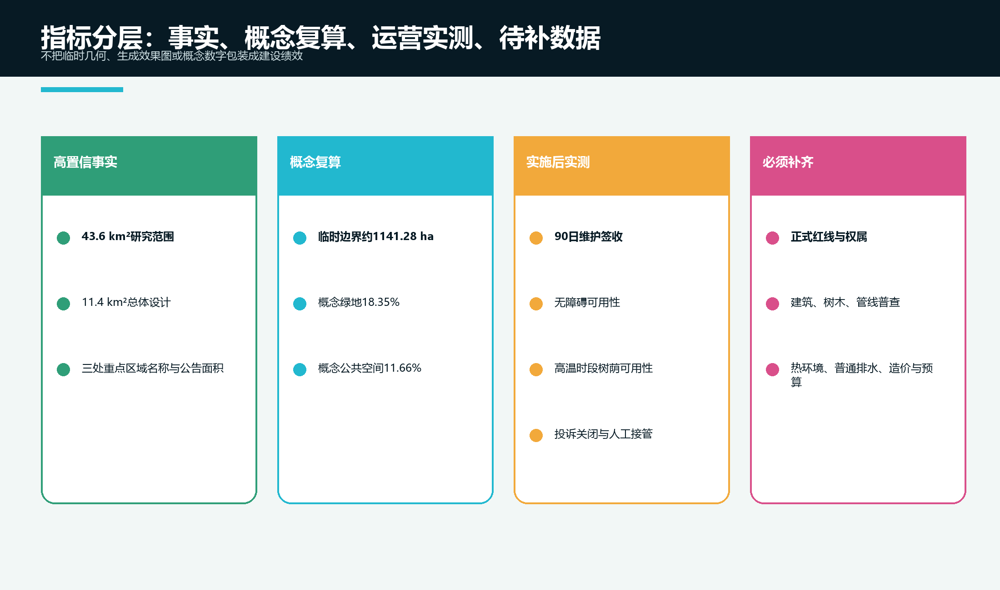
风险、版权与合规说明
最大的设计风险不是技术失败，而是概念被误读为承诺。临时边界可能被误读为红线，生成效果图可能被误读为现状，过去的水景表达可能造成错误场地认知，AI建议可能越过医疗、教育、法律和公共安全的专业权限，活动热度也可能挤压居民日常。对应控制是：明确声明场地无现状水系，效果图不出现河湖与景观水面；同时坚持数据最小化、人工服务、限定测试区、可逆构造、具名维护者和独立暂停权，并在年度报告公开“继续、修正、停止”。深度
方案文字、示意图、GeoJSON和排版由本次智能体工作生成或基于仓库内公开、已清权材料重组；十五张互不重复的空间效果图使用内置图像生成工具制作，分别覆盖总体、横向连通、清河验证、AI原点、大钟寺、开源成果、夜间步行、医疗、教育、商业、文化路线、组件制作、全球开放周、日常维护和低速配送场景，只表达概念氛围和空间关系，不作为场地证据。全部新图均执行“无现状地表水系”条件，不出现河湖、明渠、湿地和景观水面。二十二组聚焦分析图按中英文分别生成；本轮重点精修全线实施底图、横向接口、三处节点概念平面、AI+场景责任协议和全球案例迁移矩阵，一图回答一个关键空间问题。系统字体仅用于本地渲染，不随包分发；外部案例只以摘要方式迁移机制。用户提供的其他投稿页面仅用于检查信息密度和图文比例，没有复制其概念、文字、图面、命名或版式。方案采用仓库要求的COMMUNITY-DISPLAY-ONLY许可，不使用未经授权的第三方商标、摄影或受限底图。来源
图件先声明证据身份，再表达设计
所有图件在标题、图注或页脚统一说明“图件类型｜证据状态｜允许用途｜来源或生成方式”，避免画面完成度被误读为事实确定度。概念分析图必须注明临时GeoJSON或假设边界，只能支持分区、联系、覆盖、邻接和方案比较；它不是法定规划、测绘成果、工程定位或逐栋审批结论。AI生成概念效果图统一理解为“非现状照片、仅表达空间意向”，不能支持政府背书、已建成状态、材料性能或施工承诺。
建议图注采用统一格式：概念分析图｜临时几何｜仅用于空间关系与复算｜数据：PROV-…；生成：Codex，2026，或 AI生成概念效果图｜非现状照片｜仅表达空间意向｜内置图像生成工具，2026。暂定洋红、复核金、公共绿和开源青必须同时配合文字与符号，不能只靠颜色传递状态。外部公开资料仍保留原权利与许可；登记来源不等于重新授权，后续任何第三方替换图都必须补充作者、许可、检索日期、改动情况和可用范围。
若后续接入真实传感器或服务数据，部署前必须完成目的限定、数据保护影响评估、网络安全、无障碍和公众告知。AI不能替代注册规划师、建筑师、景观师、交通、给排水、结构、消防、文保、医疗、教育和法律专业人员的最终判断。
参考资料
直接依据包括公开征集公告、面向智能体任务书、场地包、公共来源登记、标准索引、专业设计深度要求以及本轮用户提供的“重点地块无现状水系”校正。机制案例来自JTC的Punggol Digital District、Forum Virium Helsinki的Kalasatama、MIT Senseable City Lab、Paris-Saclay公共开发机构、Barcelona市政府22@资料和Waterfront Toronto数字审查资料。完整URL、许可、获取日期、适用范围和局限记录在sources.json中；案例只支持组织机制，不代替场地事实。来源 来源 来源
评审时建议沿一条逻辑线阅读：先判断“一毫米”是否把铁路文化、中关村创新和AI治理统一成清晰方法；再检查9公里三段、三个枢纽和十五个场景是否真正落到空间；最后检查每个项目是否有责任人、证据、人工复核、成本边界和退出条件。任何暂时无法回答的问题都必须被标记为待补，而不能被效果图或口号掩盖。
归纳而言，本方案不是“在铁路公园里加入AI”，而是利用铁路遗产这条可步行、可识别、可持续维护的公共骨架，为海淀建立从问题提出到研究、验证、首用、孵化和公开复盘的城市接口。它的竞争力不依赖不存在的水系、巨型地标或一次性节庆，而依赖一套能够在普通街区中运行的空间、人员、证据和资金规则。主办方如果只记住一句话，应当是：每一毫米改变都要说清楚为什么做、在哪里做、谁来负责、怎样证明、什么时候停止。